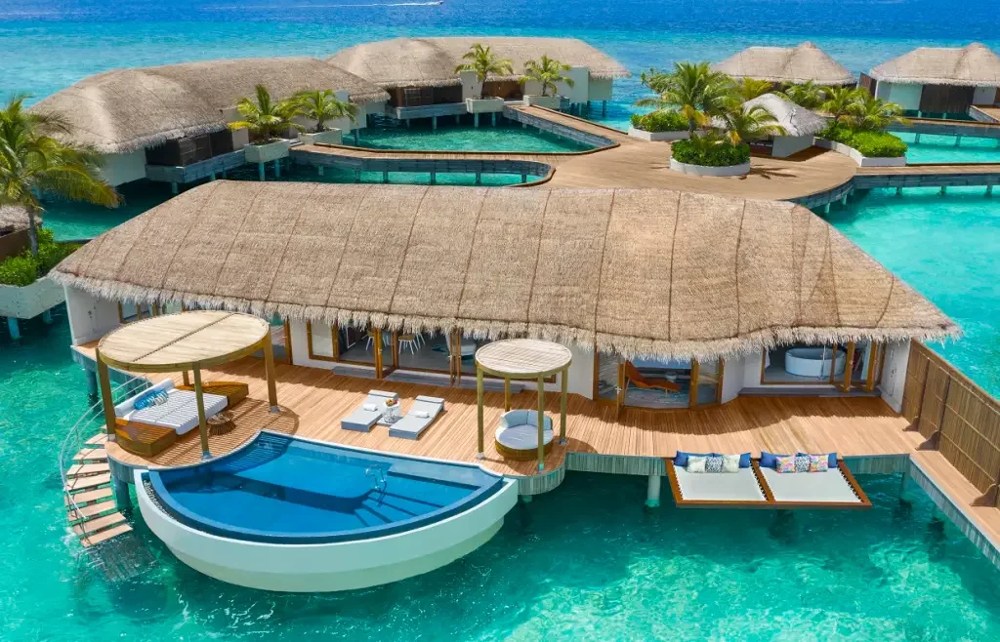

Viagens e aventuras são uma maneira incrível de explorar o mundo, experimentar novas culturas e sair da nossa zona de conforto. Oferecem oportunidades de aprendizado, diversão e criação de memórias para a vida toda. Com o avanço da tecnologia, hoje em dia é muito mais fácil planejar e organizar viagens ou aventuras, seja sozinho ou com ajuda especializada.
Localizada no continente asiático, a República das Maldivas é formada por aproximadamente 1.200 ilhas no oceano Índico. Esse pequeno país insular está situado a sudoeste da Índia e sua única fronteira real é com o estado indiano das Laquedivas (ao norte). A República das Maldivas é um local privilegiado quanto aos aspectos naturais – apresenta águas azuladas, quentes e transparentes, além de extensas áreas com coqueirais.
Todas essas belezas atraem milhões de visitantes, sendo essa uma atividade de fundamental importância para a economia nacional."As Maldivas estão na lista de lugares em que todos sonham visitar pelo menos uma vez na vida. As praias perfeitas com areia branca e um mar com tonalidades marcantes e os bangalôs luxuosos sobre às águas formam um cenário inesquecível e romântico! Não é à toa que o arquipélago é o destino de muitas celebridades e casais em lua de mel.
Quanto custa viajar para as ilhas Maldivas?Cancún é um dos destinos preferidos de quem viaja para o México, principalmente porque é um dos destinos mais completos do Caribe, com uma zona hoteleira repleta de hotéis e resorts, boas opções de compras, vida noturna, pontos turísticos incríveis e um visual de tirar o fôlego. Essa linda cidade mexicana está localizada no estado de Quintana Roo, na região da Península de Yucatán, e carrega as memórias povo maia, com muita riqueza cultural e histórica.

Os admiradores de civilizações antigas se encantam com a Chichen-Itzá, que fica há aproximadamente 200km de Cancún, e é um sítio arqueológico considerado uma das novas maravilhas do mundo e recebe milhares de turistas por ano.
Qual a melhor época para ir a Cancún?Paris é um grande centro turístico, repleto de opções para pessoas de todas as idades e mais diversos gostos, com paisagens de tirar o fôlego, cartões-postais mundialmente conhecidos e ruas que parecem saídas de filmes.

A capital da França, é uma importante cidade europeia e um centro mundial de arte, moda, gastronomia e cultura. Sua paisagem urbana do século XIX é cortada por avenidas largas e pelo rio Sena. A cidade é conhecida por monumentos como a Torre Eiffel e a Catedral de Notre-Dame, uma construção gótica do século XII, sendo famosa também pela cultura dos cafés e por lojas de estilistas famosos na Rue du Faubourg Saint-Honoré
Quais os melhores hotéis para se hospedar em Paris?Dubai é a maior cidade e capital do Emirado de Dubai, que faz parte dos Emirados Árabes Unidos (federação de monarquias absolutas árabes). A cidade é conhecida pelos seus shoppings de luxo, pela grandeza e modernidade de suas construções e por uma animada vida noturna. A requintada Dubai é um dos destinos favoritos de férias para todos, opção de investimento e a residência de milionários.

A cidade de Dubai foi moldada para receber turistas. Tudo é planejado para causar as melhores sensações aos visitantes. Tudo é lindo, limpo e enorme. Apesar de estarmos no meio do deserto, a cidade tem pontos turísticos para todos os gostos. Dois pontos turísticos muito visitados são Palm Islands e Burj Khalifa. Há muito o que ver Dubai.
10 curiosidades sobre DubaiMachu Picchu é simplesmente a principal atração do Peru. Desde que a descoberta científica da cidadela inca foi anunciada, sua complexa e misteriosa arquitetura encastelada, cravada em um cenário montanhoso dramático, vem atraindo turistas de todo o mundo. Tanta popularidade levou o destino, uma das sete maravilhas do mundo, a sofrer com o turismo desenfreado e alguns dos preços mais altos do país. Mesmo assim, hordas de turistas desembarcam sem parar nessa antiga cidade inca de pedra, seja pela clássica Trilha Inca ou por trens vindos de Cusco. E motivos não faltam para tamanha determinação.
Machu Picchu, que em língua quéchua significa “montanha velha”, está localizada sobre uma montanha de granito e abriga impressionantes construções erguidas com pesados blocos de rocha. Cercado de enigmas a respeito de sua criação e serventia, o local, declarado pela Unesco como Patrimônio Cultural e Natural da Humanidad.
História de Machu Picchu| Destino | Faixa de Preço (R$) |
|---|---|
| Maldivas | 8.000 - 27.000 |
| Cancún | 4.500 - 16.500 |
| Paris | 5.500 - 22.000 |
| Dubai | 8.000 - 33.000 |
| Machu Picchu | 3.000 - 11.000 |